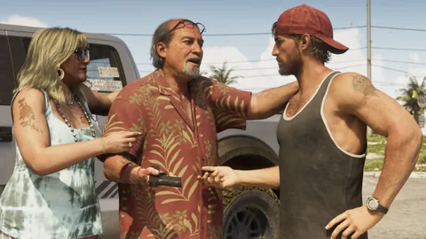
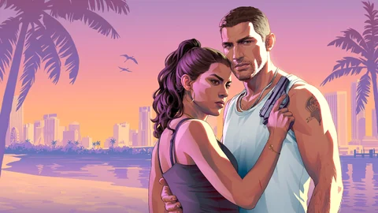

A story in chapters
The Ultimate Edition text mentions bonuses to discover “in every chapter”. The number of chapters hasn’t been published.
Official1
Missions · GTA VI
No mission has an official name yet. Here’s Jason and Lucia’s story as Rockstar tells it, what the videos show of the missions, and the guide that will fill up starting November 19, 2026.
Each sequence says where it comes from: Rockstar text, official image or player notes. No mission name is made up or taken from the leaks; the walkthroughs will come with the game. Understanding statuses.
The story
Jason Duval and Lucia Caminos have always known the deck is stacked against them. When a job that was supposed to be easy goes wrong, they end up on the dark side of the sunniest place in America, at the heart of a criminal conspiracy that stretches across the whole state of Leonida. To make it out, they’ll have to rely on each other more than ever.
Jason grew up around grifters, did a stint in the Army and works in the Keys for local drug runners; Lucia is getting out of the Leonida Penitentiary, where fighting for her family landed her. Rob Nelson, from Rockstar North, sums up what comes next for Famitsu: after the botched job, several people are hunting them, they hide out in Vice City and look for enough money to get out of it.
Rockstar openly takes Bonnie and Clyde as its model: Rupert Humphries, in charge of narrative, says so to Dazed. How they meet, who’s after them and how it all ends: nothing has been published.
The Ultimate Edition text mentions bonuses to discover “in every chapter”. The number of chapters hasn’t been published.
Official1
You switch from Jason to Lucia when they’re together, but some missions lock you into one of them: Rob Nelson mentions an early mission, in a big housing project, that’s Jason only.
According to Rob Nelson, chaining missions together won’t earn enough money to move the story forward: you’ll also have to make some on the side, by robbing stores or gang hideouts.
A criminal profile keeps track of what you do and doesn’t fade away like wanted stars; some optional objectives have consequences for the story.
The official videos
Rockstar hasn’t named a single mission. The titles below describe what you see: they aren’t mission names.
 IllustrationAround 1:16Trailer 1
IllustrationAround 1:16Trailer 1Trailer 1 · Around 1:16 · Sequence 01
Jason and Lucia walk into an Uncle Jack’s Liquor masked, guns drawn, before making a run for it.
Places spotted on our map, based on the video: nothing is placed at random.
 Around 0:16Trailer 2
Around 0:16Trailer 2Trailer 2 · Around 0:16 · Sequence 02
Brian, behind the wheel of his pickup, sends Jason to collect; the run goes wrong: a motorcycle chase, then a getaway on a jet ski with Lucia. Jason’s official profile confirms this debt collecting for Brian.
 Around 1:15Trailer 2
Around 1:15Trailer 2Trailer 2 · Around 1:15 · Sequence 03
Lucia, in a skull mask, holds employees at gunpoint in a red-lit room while Jason moves hostages. According to GameSpot, the Sinfrontera National Bank sign can be read on screen. Nothing official ties this job to Raul.
 Around 1:58Trailer 2
Around 1:58Trailer 2Trailer 2 · Around 1:58 · Sequence 04
Lucia fires a grenade launcher from a bullet-riddled vehicle, facing an armored police van.
Seen in media1
 IllustrationOpeningExtended Look
IllustrationOpeningExtended LookExtended Look · Opening · Sequence 05
The duo comes to pick up goods for Boobie Ike in a housing project; when a police unit shows up, it turns into a shootout, then an escape through a window. Rob Nelson mentions an early mission, in a big housing project, that’s Jason only: the link is likely, not confirmed.
Places spotted on our map, based on the video: nothing is placed at random.
 IllustrationAround 10:50Extended Look
IllustrationAround 10:50Extended LookExtended Look · Around 10:50 · Sequence 06
On the rooftop terrace of the Effluvia bar, Brian and Lori meet the duo; according to player notes, Brian’s contact only wants to hire one of them. A montage of gas station robberies follows.
Places spotted on our map, based on the video: nothing is placed at random.
 IllustrationUntil 16:49Extended Look
IllustrationUntil 16:49Extended LookExtended Look · Until 16:49 · Sequence 07
Lucia drives Raul’s car during a long chase; the game switches on its own from Jason, shooting from the back seat, to Lucia at the wheel. At the end, Raul pays Jason and asks them to keep their phones on.
 IllustrationAround 20:00 to 25:40Extended Look
IllustrationAround 20:00 to 25:40Extended LookExtended Look · Around 20:00 to 25:40 · Sequence 08
The duo escorts an executive of the Megamundo media group from the airport to an opening party; armed attackers strike. Jason intercepts their radios and sets off a charge as a diversion. According to Rob Nelson, you can switch characters freely in this mission.
Places spotted on our map, based on the video: nothing is placed at random.
Ultimate Edition
The only game content with an official name belongs to the Ultimate Edition. They already have their own page on the site.

Ultimate Edition
Raid the hideout of one of Southside’s loudest gangs, then escape with special items and contraband, according to the edition text.
Official1

Ultimate Edition
Track down abandoned classic cars for Wyman, an eccentric collector and local “fixer”, and bring them back to their former glory.
When this content unlocks, and whether it exists without the Ultimate Edition, hasn’t been published.
The guide
No mission has been published with its name yet. From launch, every mission will get its own page: chapter, type, characters, places, requirements, objectives, rewards, duration, step-by-step walkthrough and tips, each with its source.
 0
0The guide · Mission type
The missions of Jason and Lucia’s story, chapter by chapter.
No mission of this type has been published with its name yet: the page below shows what each will contain.
 0
0The guide · Mission type
Missions offered by other characters, alongside the story.
No mission of this type has been published with its name yet: the page below shows what each will contain.
 0
0The guide · Mission type
Planned jobs: banks, jewelry stores, shops, hideouts.
No mission of this type has been published with its name yet: the page below shows what each will contain.
 0
0The guide · Mission type
Encounters and events you come across along the way.
No mission of this type has been published with its name yet: the page below shows what each will contain.
 0
0The guide · Mission type
Content included in an edition of the game.
No mission of this type has been published with its name yet: the page below shows what each will contain.
The recommended order will be set mission by mission, based on the game itself: nothing has been published so far.
Official sources
Rockstar tells the story bit by bit: two trailers, character profiles, an edition text and a long demo.
Trailer 1 introduces Lucia, Jason and Vice City, and already shows the duo in the middle of a robbery.

Jason works for the Keys drug runners, Raul recruits robbers, Brian moves his product through his boatyard.

The Ultimate Edition names two pieces of content, the PTT Youngin$ hideout and Wyman’s collection, and mentions bonuses to discover in every chapter.

Four story sequences, from the police raid to the assault on the Megamundo, with no mission name on screen.

Rob Nelson details character switching, robberies solo or as a duo, gang hideouts spotted on the map and the role of money.

Rob Nelson says he finished his playthrough in about 80 hours, including the main story and some of the optional objectives.

A “seen” sequence comes from an official video; its title stays descriptive until Rockstar gives the mission’s name.
Player observations
Players pick apart every shot. Here’s what they suggest, cited as such.
A mission name will only go into the guide with an official source: the game itself, or a Rockstar video or text.
Open questions
The guide is ready; it’s just missing the game’s numbers.
No number of missions and no number of chapters: only the split into chapters is official.
No amount has been published for a mission, a heist or a hideout.
Nothing says whether a mission can be missed for good, or replayed.
They exist and affect the story; their exact form hasn’t been detailed.
The PTT Youngin$ hideout and Wyman’s collection belong to that edition.
Each answer will join the guide with its source as soon as it’s published.
Site tools
While you wait for the missions, get your calculations ready and look up the characters who give the duo work.
At launch, every mission page will have its own calculator box and a checkbox to track your progress.
Questions
The questions people type into a search engine, with short, dated answers.
21 sources checked
Every sequence and every sentence on this page points to a dated source. The pages were checked on October 4, 2026 through a search engine: opening them directly was blocked from our workspace that day.
A page or video published by Rockstar (GTA VI site, Newswire, trailers, Extended Look), or statements by a Rockstar representative reported by a named outlet, with the date.
What an official image or clip shows without any Rockstar text saying it: a trailer shot, a screenshot, a moment from the Extended Look, with the timestamp when known.
A match made by players, a wiki or a fan site (real place, actor, county). Quoted as such, never presented as confirmed.
A question with no published answer: price, purchase, access, role in the story. We write it down so we don’t guess it.
The official story summary and the profiles of Jason, Lucia, Raul, Brian and Boobie.
The trailers that this page’s sequences and stills come from.
The roughly 26-minute presentation, captured on PS5, that the four story sequences come from.
Bonuses “in every chapter”, the PTT Youngin$ hideout to raid and Wyman’s collection.
The botched job and the escape to Vice City, the character sometimes chosen for you, robberies solo or as a duo, gang hideouts and the role of money.
The same interview, in English; the Rob Nelson quotes used here come from it.
Picks up Rob Nelson’s line to Famitsu: you’ll have to make money outside missions to move the story forward.
Rob Nelson (Famitsu): an early mission, in a big housing project, that’s Jason only.
The automatic switch from Jason to Lucia during the getaway with Raul, and free switching during the Megamundo mission.
Rupert Humphries, in charge of narrative at Rockstar, on a story built as a “Bonnie and Clyde-style” tale.
About 80 hours, main story plus some of the optional objectives, some of which affect the story (New York Times).
Trailer 2 shot by shot: the collection run for Brian, the sign of the robbed bank, the getaway.
The criminal profile that keeps track of what you do, and the demo’s opening.
The protection mission at the Megamundo and the assault that cuts it short.
The meeting at the Effluvia bar around 10:50 and the montage of robberies that follows.
The Trailer 1 liquor store robbery, with its timestamp.
The Extended Look’s four story sequences; the side character names it gives still need to be checked against the video.
Picks up the edition text: the PTT Youngin$ hideout and Wyman’s collection, exclusive to the Ultimate Edition.
Some players work out the order of the scenes from the missing ankle monitor during the robbery.
A mission list with no official names and no Rockstar source; the site uses none of them.
Mixes Rockstar’s comments with those of an invited content creator: the heist tiers and the figure of about $1,000 are still to be confirmed.
What we don’t do. No data from the 2022 or 2026 leaks, no made-up mission names, no guessed amounts. The statuses are explained in the Tutorial.
The calculator
Mission earnings will come with the game. Enter what a mission would pay, how long it takes and your share: the calculator compares it with your other activities, per hour of play.
What’s next?
Each page will be filled in once the game is out: what you find there, what you do there, what it earns you. Nothing made up until then.